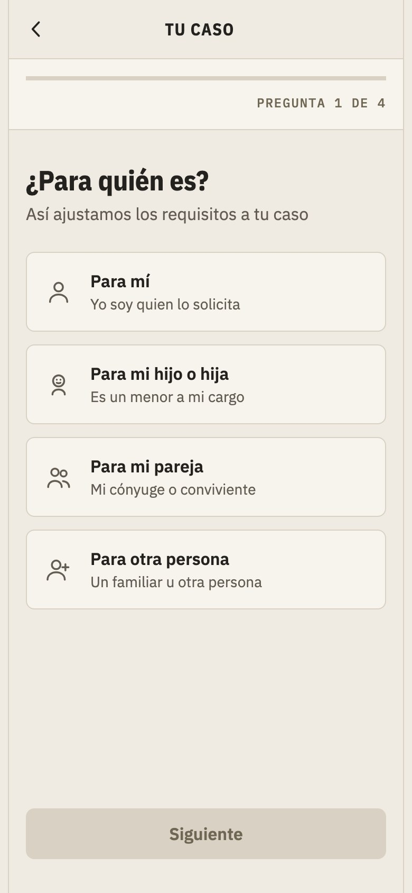
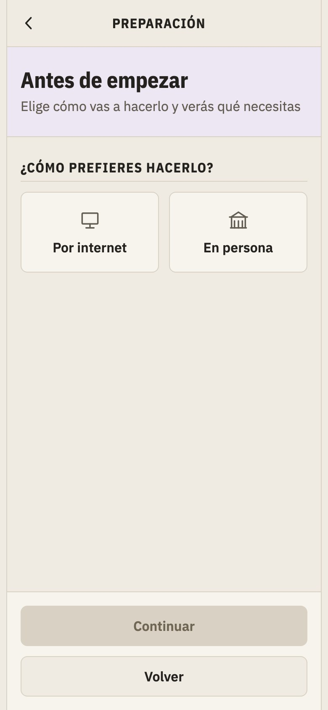
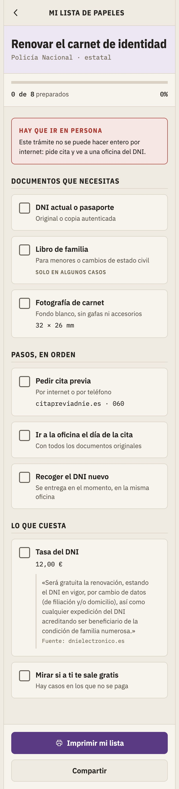

A LA PRIMERA.
Tu trámite, con tus papeles, sin sorpresas
Un asistente para los trámites con la administración española. Dices cuál necesitas, respondes cuatro preguntas y te devuelve la lista exacta de papeles que hay que llevar. Ya está en pie y se puede tocar: no es solo una maqueta.
Qué hemos hecho
Sprint 2 · el diseño
La identidad del sello
Papel de expediente, tinta y violeta de caucho. IBM Plex en tres cortes. Ni un verde, ni un emoji, sin modo oscuro.
Tres versiones, todas guardadas
El diseño dio dos saltos. Las tres se comparan pantalla a pantalla en comparador.html, incluida la descartada.
Un texto que se puede agrandar
La escala va en rem: crece con el navegador de cada cual. Un test falla si un color no llega a contraste AA.
Cada dato con su fuente
Nada se genera al vuelo. Cada requisito sale de la página oficial, con su cita y su enlace en la propia ficha.
La pantalla estrella
Detalle de trámite · la que aporta el valor de verdad
Pantalla estrella

Detalle de trámite
Home · Buscador → Detalle → Wizard → Checklist
Qué resuelve
Saber si esta es tu ficha y qué te va a pedir, antes de preparar nada.
Por qué importa
Reúne en una pantalla lo que la administración reparte en tres: qué es, a quién aplica, cuánto cuesta, qué plazo tiene, por qué canales y de dónde sale cada dato.
Qué trae la pantalla, de arriba abajo
Las otras cuatro pantallas
Capturas reales de las maquetas, a ancho de móvil




Cómo lo hemos hecho
Todo a base de prompts, con Claude Code
La spec manda
spec.md → plan.md → tasks.md antes de escribir nada. Si la app y la spec no coinciden, se arregla la app.
Una red que no depende de acordarse
Lint, tipos, 87 tests y build en cada cambio. Uno de ellos cruza todos los colores de texto contra todos los fondos.
Comprobado en navegador de escritorio y móvil
Las maquetas y el comparador se abren en un navegador de verdad y se miden ahí, a ancho de móvil y de escritorio.
Para qué
Para que nadie vuelva de una ventanilla porque le faltaba un papel. Marta lleva los trámites de su familia y no tiene por qué saberse el reglamento.
Se lee con prisa, se imprime y la acaban leyendo personas mayores. Por eso el tema es claro fijo y el cuerpo no baja de 16px.
Lo que viene
22 fichas publicadas y otras 22 en el backlog, repartidas en once hechos vitales.
Ahora toca ampliar cobertura por comunidades autónomas, antes que engordar la lista por engordarla.